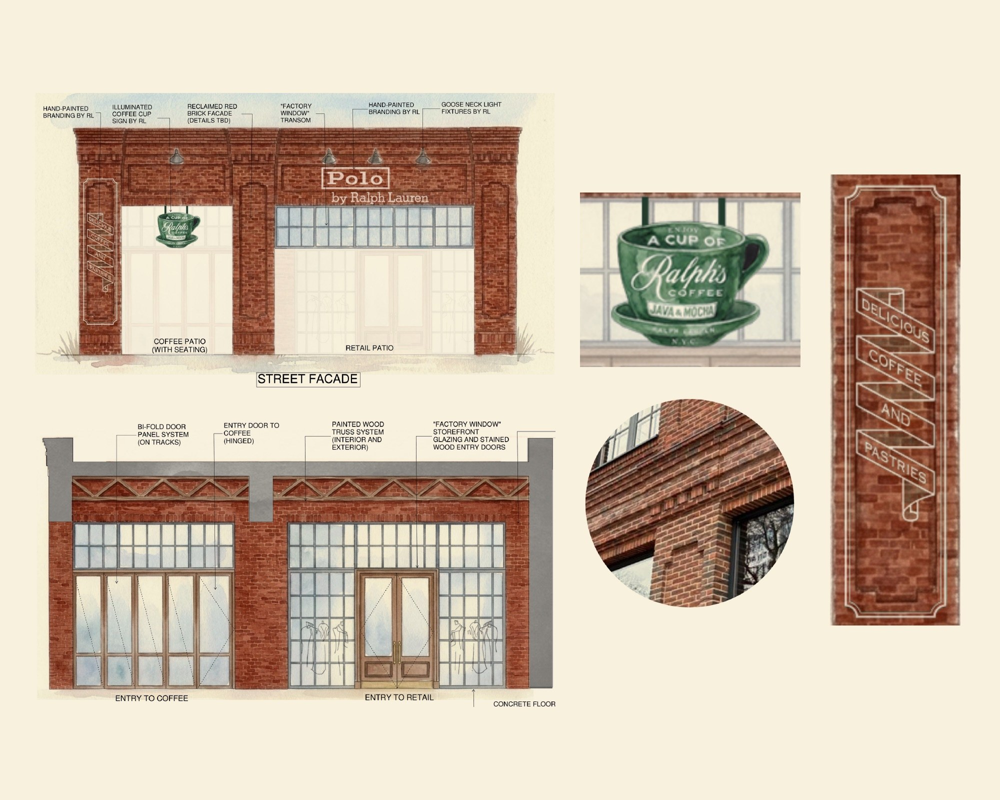
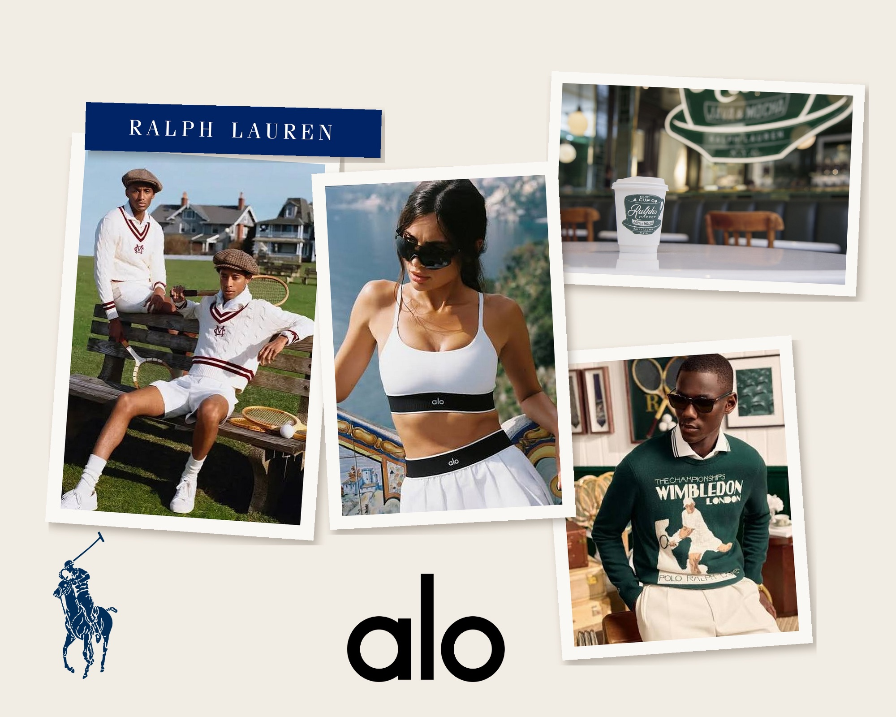
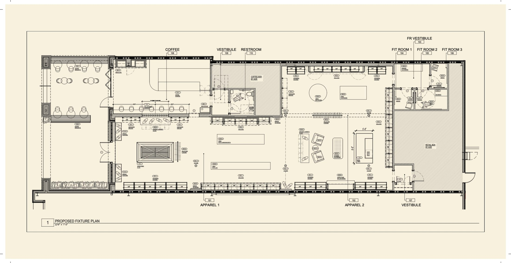
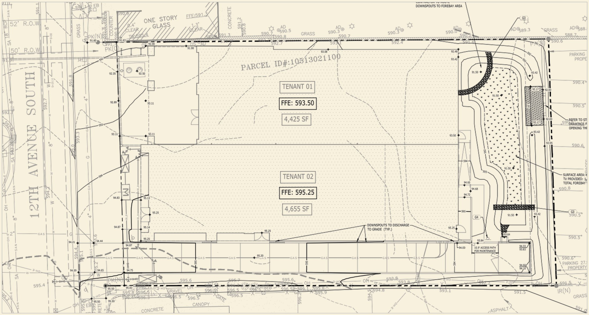

12 South
Nashville, Tennessee
2318 12th Avenue South
A new home for Polo Ralph Lauren, with Ralph’s Coffee and alo alongside.




Location
Nashville, Tennessee
2318 12th Avenue South




Location